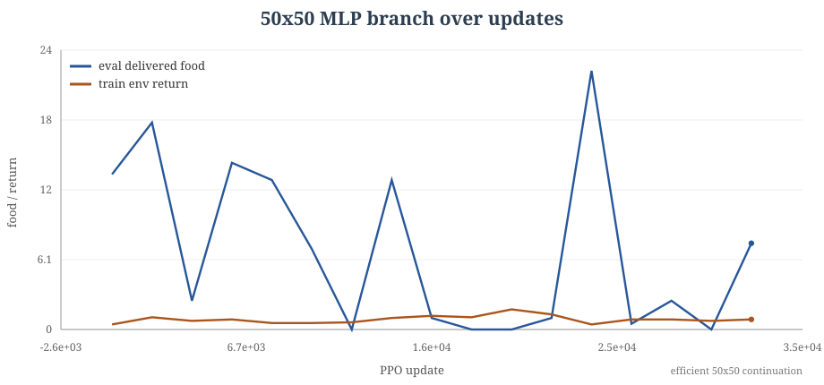
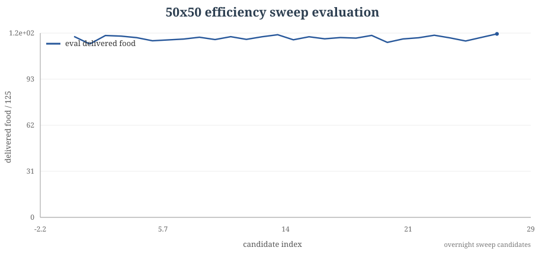
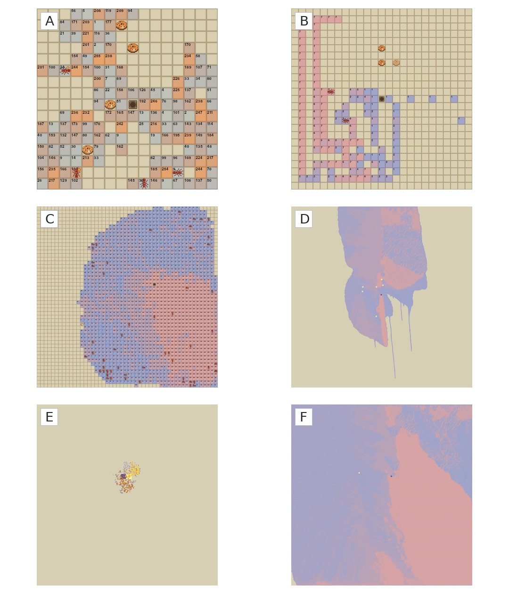

Actual policy rollouts
All videos below are real rendered rollouts from local checkpoints or evaluation artifacts. Labels distinguish task geometry from render resolution when those are not the same thing.
Interactive policy sandbox
This runner uses exported actor weights from
runs/notebooks/ant_count_25x25_3_bits/4_ants/checkpoints/model.pkl.
Click the grid to place the colony or food sources, then run the
four-ant policy in the browser.
Abstract
This project studies cooperative foraging in a gridworld where ants observe local patches, carry food back to a hub, and optionally write discrete byte values into the environment. The central result is not that byte communication has been causally proven. The clearer result is a map of what made the task learnable: a corrected delivery-only contract, distance shaping, enough ant coverage, sampled deployment, and a major shift from flat MLP critics to spatial centralized critics. The best 25x25 policies solve the full delivery task under sampled movement. The best 50x50 branch reaches strong behavior, but mixes many interventions. The 250x250 branch shows why shaped return and byte activity must be separated from raw deliveries.
Environment and method
The environment state contains grid geometry, hub location, an
integer food grid, ant positions, facing, carrying flags, occupancy,
and a writable byte grid. For N ants and
B write bits, the joint action is:
MultiDiscrete([5, 2^B] * N)
Each ant chooses a movement action and a write value. During
deployment the actor is local. During training, MAPPO uses centralized
critics, which makes critic architecture part of the causal story:
mlp, strided_cnn, set_cnn, and
resnet_cnn are not interchangeable footnotes.
Learning and evaluation curves
These plots are generated from local metrics.jsonl and
sweep summary files. The most important habit is to keep raw
deliveries separate from shaped return.





Compiled report figures



Artifact viewer
Selecting an artifact changes the rollout video and the audited provenance beside it. When an evaluation task and a render grid differ, they are listed separately.
50x50 frontier policy
60-ant 50x50 checkpoint, rendered from the actual policy.
Main empirical story
- Define the task correctly. The target is delivered food from depleting sources, not pickup activity.
- Make sparse foraging learnable. Distance shaping, four ants, and sampled movement unlock 25x25.
- Name the critic boundary. The 50x50 progress line changes from flat MLP critics to spatial centralized critics.
- Treat bytes as a hypothesis. Saturated writes and videos with trails are not proof of causal communication.
- Separate real delivery from shaped activity. This is especially important in the 250x250 branch.
Representative quantitative results
| Branch | Contract | Result | Caveat |
|---|---|---|---|
| 25x25 unlock | 4 ants, 23 food, 6 sources, MLP critic | 23/23 sampled, success 1.0 | Greedy deployment remains weaker. |
| 50x50 frontier | 60 ants, 125 food, 2 sources, 8 bits, strided CNN critic | 123.906/125, success 0.906 | Many interventions move together. |
| 100x100 bridge | 120 ants, 375 food, 6 sources, continuation branch | 372/375, success 0.625 | Continuation and temperature selection matter. |
| 250x250 reset branch | 500 ants, 5000 food, one rich source, set CNN critic | local delivery progress, best-train around 1003 deliveries | Not a solved general 250x250 task. |
What remains open
The next clean experiments should be matched ablations: no-write, byte-shuffle, no-byte-read, same write-cost across 4 and 8 bits, and MLP versus spatial critic under the same source geometry. Until then, the strongest claim is behavior engineering and experiment diagnosis, not proven emergent language.
BibTeX-style citation
@misc{figo2026coolantz,
title = {Cool Antz: Multi-Agent Foraging With External Memory},
author = {Figo, Jere},
year = {2026},
note = {Reinforcement learning project report and local experiment chronology}
}